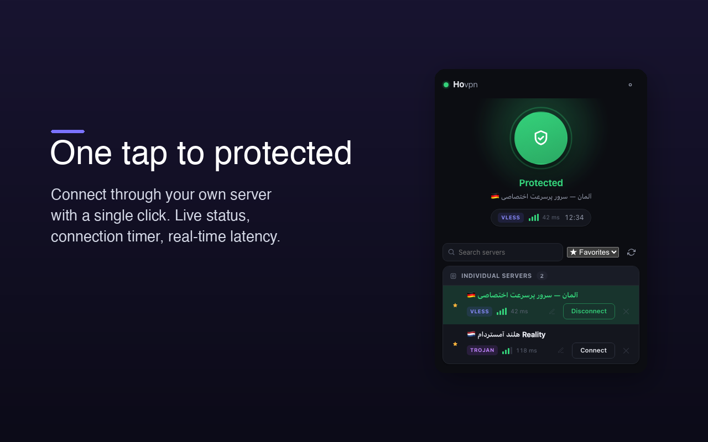
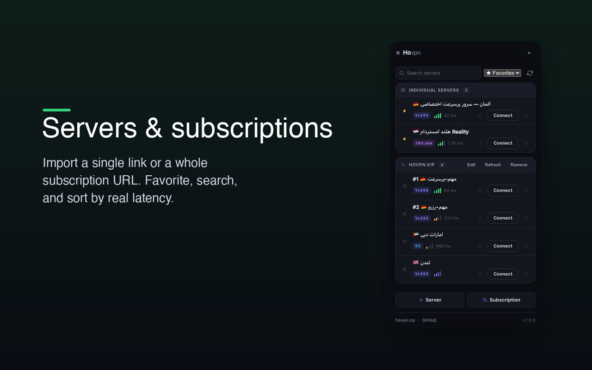

Everything you need, nothing you don't
One-tap connect
A single button with live status, a connection timer, and real-time latency for every server.
Links & subscriptions
Paste one config link or import a whole subscription URL — your server list, kept in sync.
Favorites & sorting
Star your best servers, search by name, and sort by real latency with signal bars.
Auto-reconnect
If the connection drops, Hovpn quietly restores it and lets you know with a notification.
Light & dark
A calm, elegant interface that follows your system theme, down to the last pixel.
Private by design
No account, no tracking, no telemetry. Your server list never leaves your device.


Browser-only, by design
Hovpn proxies only your browser — the rest of your computer is untouched. Because browsers can't run a proxy engine on their own (a security boundary), Hovpn pairs a lightweight browser extension with a small local helper that does the actual connecting.
Install in two quick steps
1 · Add the Hovpn extension
Install from the Chrome Web Store (works in Chrome, Edge, Brave, and Chromium).
2 · Install the free helper
Download and run it once — no technical setup, no admin password. It bundles everything it needs.
Then open the Hovpn icon in your browser, paste a config link or subscription, and connect. Full walkthrough on the Support page.